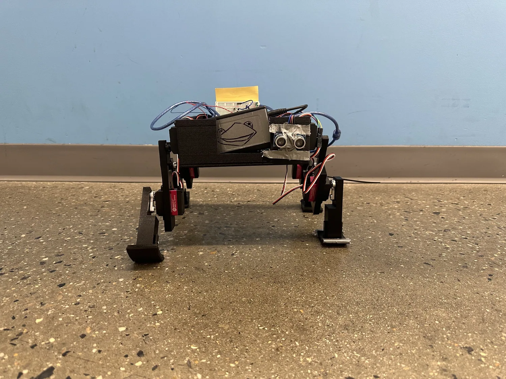
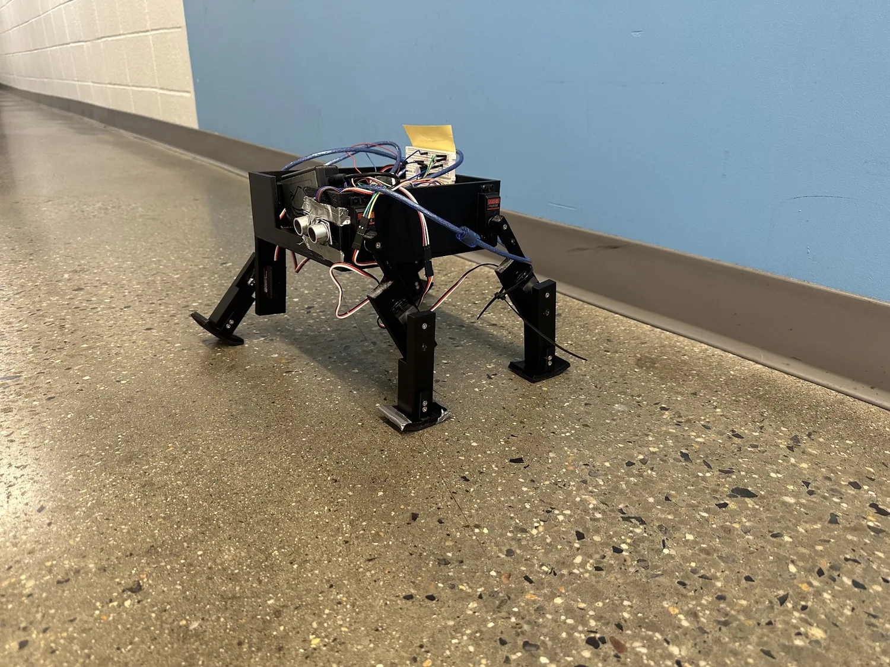
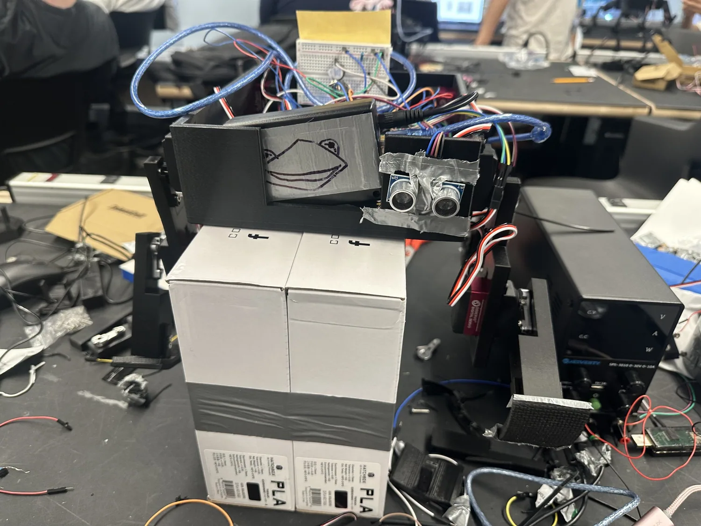

Walking Robot.
From parts to motion.
I designed and assembled a walking robot using 3D-printed parts, servo motors and an Arduino Uno during the SHAPE programme in summer 2025.
Kermit the FROG in motion.
A demonstration of the assembled walking robot. The build process and mechanical adjustments are documented below.
Turning a mechanism into movement.
The finished SHAPE prototype brings together servo-controlled legs, a 3D-printed structure and Arduino-based control.

Walking robot prototype
Leg and joint arrangementEngineering a walking mechanism.
Building a legged machine required the mechanical parts, actuators and control electronics to work together. I used 3D-printed components for the structure and servo motors to create articulated motion.
The photographs capture the progression from a workbench assembly to a prototype ready for movement tests.
Getting the hardware to cooperate.
I connected and controlled the servos through an Arduino-based setup, then adjusted the structure and wiring during testing. The images and clips document the hands-on debugging process involved in moving from a stationary assembly towards walking motion.

Build, test, adjust, repeat.
The exposed wiring and printed components capture the useful reality of iterative engineering: testing joints, adjusting servo operation and refining the assembly.
- 3D-printed structures translated a digital design into usable parts.
- Servo motors formed the actuated joints.
- Arduino provided a platform for controlling movement.
The finished robot from different angles.
The completed assembly shows how the 3D-printed frame, servo motors and electronics came together into a walking mechanism.